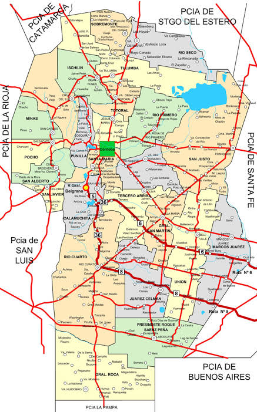
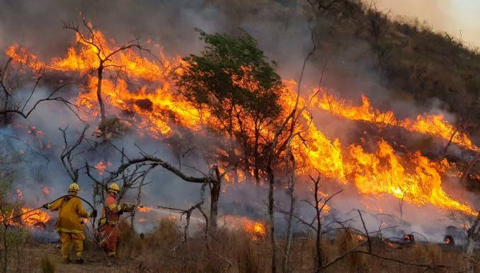
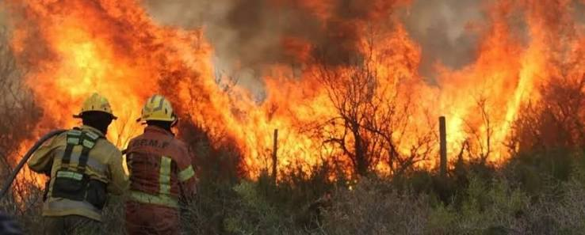
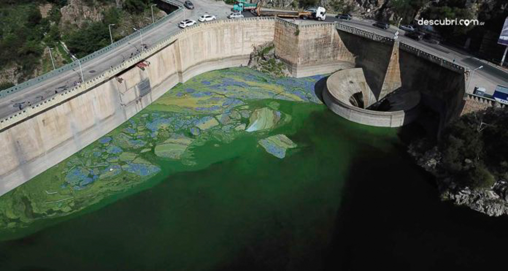
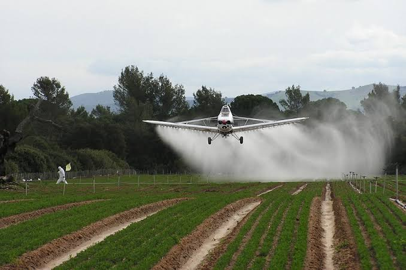

🏙️ Ciudad de Córdoba
REGISTRO VISUAL
Imágenes relacionadas con los ambientes y problemáticas de la provincia de Córdoba.
🏙️ Ciudad de Córdoba

🗺️ Territorio provincial

🌳 Deforestación

🔥 Incendios forestales

💧 Recursos hídricos

🌱 Actividad agrícola
PARA RECORDAR
Los bosques nativos son importantes para conservar la biodiversidad y proteger los suelos.
Los ríos y embalses son recursos fundamentales para la población.
El fuego puede producir importantes cambios en los ecosistemas.
FUENTES DE INFORMACIÓN